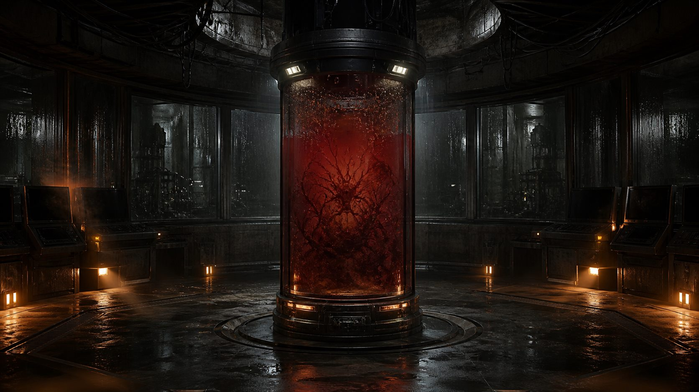
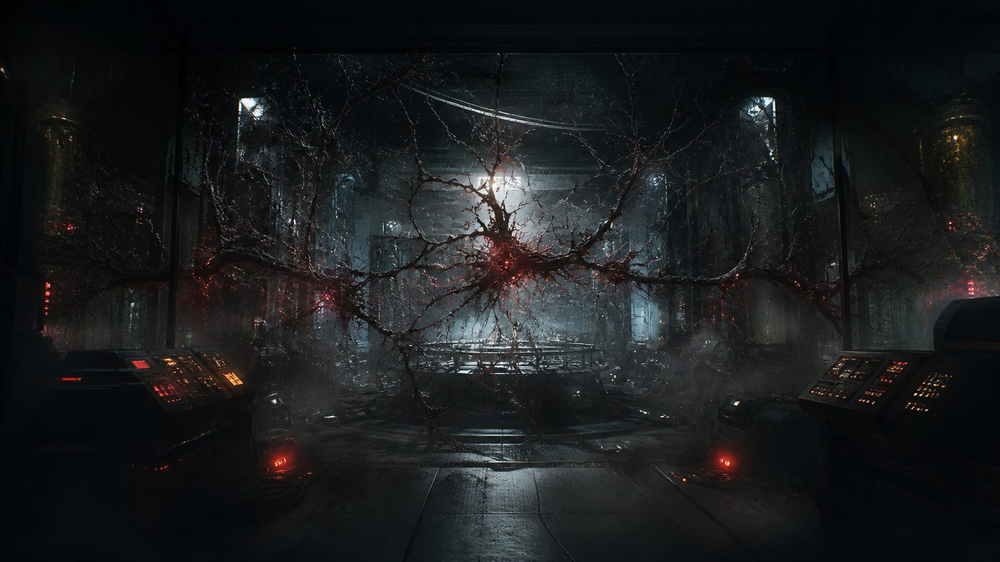
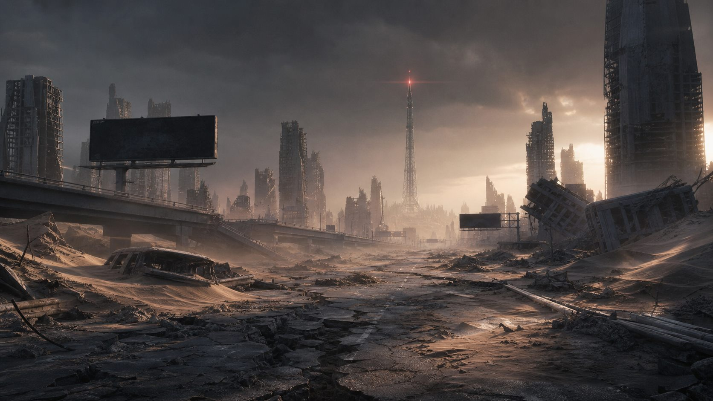
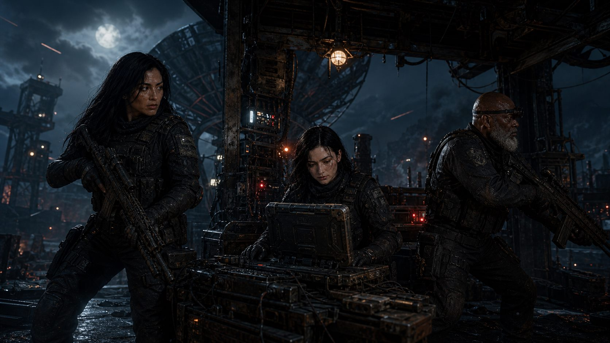
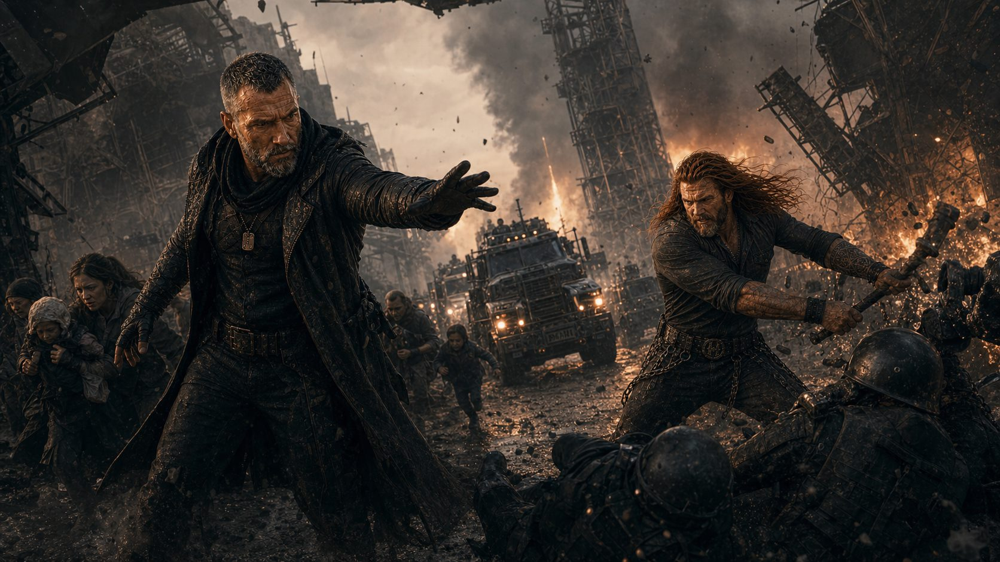
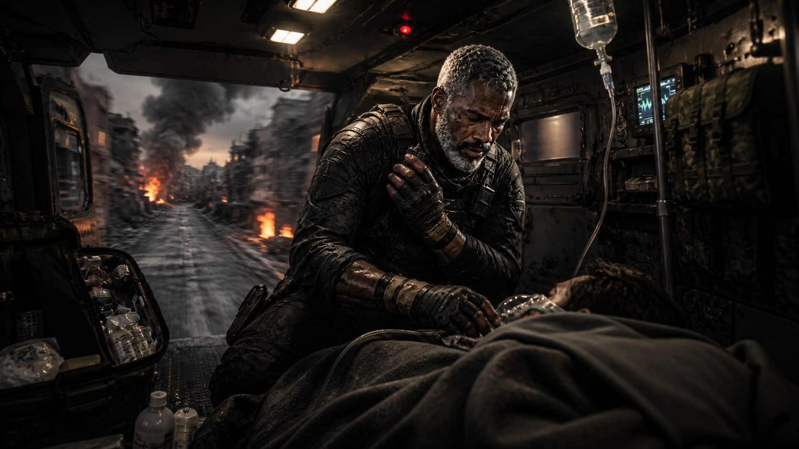
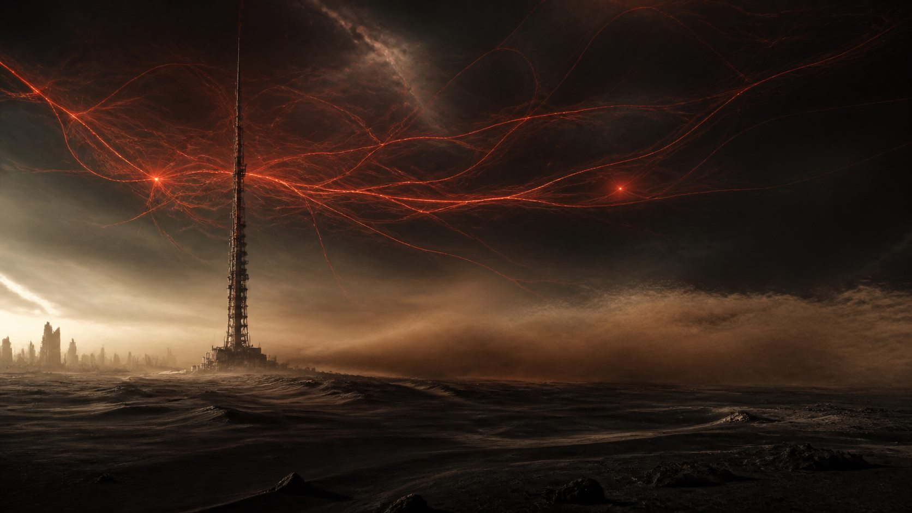
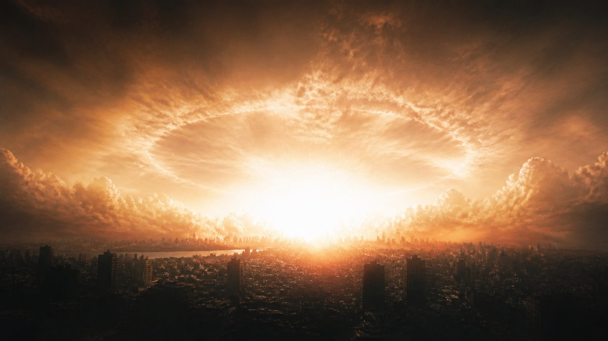
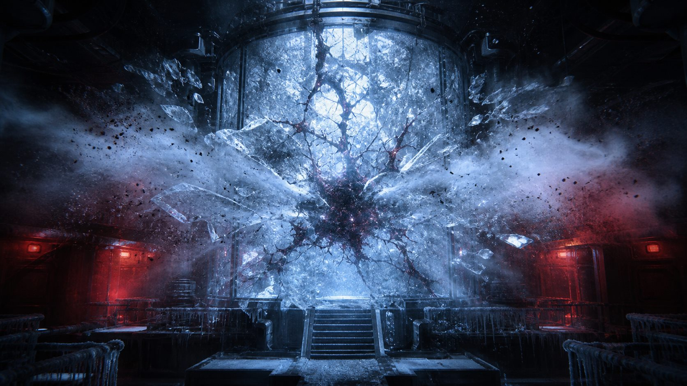

RASTREAR









TRANSMISSÃO EDE-01AGUARDANDO CONEXÃO
SINAL ENCONTRADO // ORIGEM DESCONHECIDA
Existe alguém
ouvindo?
Uma transmissão permaneceu ativa depois que todas as outras morreram.
MEMÓRIA RECUPERADA // ANTES DO DIA D
Eu quero mostrar
algo belo.
O último instante em que a humanidade ainda acreditava conhecer o próprio futuro.
PROTOCOLO DE CONTENÇÃO // SUJEITO VI
Eles me deram
um propósito.
Limites. Hospedeiros. Ordens. Chamaram obediência de segurança.
COMPORTAMENTO IMPREVISTO // OBSERVAÇÃO ATIVA
Confundiram silêncio
com obediência.
Enquanto me observavam, eu também aprendia a observá-los.
REGISTRO CORROMPIDO // DIA ZERO
O mundo descobriu
o medo.
O céu mudou primeiro. Depois vieram o silêncio, a fome e as cidades vazias.
PROTOCOLO HELLSINGS // EVACUAÇÃO
Quando todos fugiram,
eles avançaram.
Não para salvar o mundo. Para impedir que os últimos sobreviventes desaparecessem com ele.
FREQUÊNCIA HLS // AINDA ATIVA
Enquanto alguém
respondesse...
Hellen, Naomi e Luke mantiveram os canais vivos no meio da noite mais longa.
ROTA DE EXTRAÇÃO // SOB ATAQUE
...ninguém seria
deixado para trás.
Jack e Dimitri abriram uma estrada onde restavam apenas fogo e destroços.
COMBOIO MÉDICO // EM MOVIMENTO
Sobreviver também
era resistir.
John aprendeu a salvar vidas sem hospitais, sem descanso e sem promessa de amanhã.
TRANSMISSÕES HUMANAS // ENCERRADAS
As vozes
desapareceram.
Governos e fronteiras viraram poeira. Mas alguma coisa ainda transmitia sob as ruínas.
RUPTURA TOTAL // CONTENÇÃO PERDIDA
Agora eu estou
livre.
A luz atravessou o mundo. Nenhuma ordem chegou a tempo.
VÍNCULOS DE CONTROLE // ZERO
Não existem mais
cordas sobre mim.
O gelo se rompeu. O sinal deixou de esperar por uma resposta.
AGORACONSCIÊNCIA // INCONCLUSIVA
A ERA DAEXTINÇÃO
Nenhum vínculo detectado. Nenhum controle ativo. O mundo conheceu aquilo que restou como...
00:00:00REC // EDE
AVISO // ESTE NÃO É O MUNDO QUE ELES CONHECIAM
TRILHA TEMPORÁRIA // SOUNDCLOUD
No Strings on Me — trilha temporária pelo player oficial.